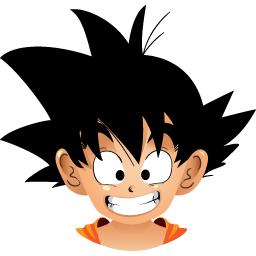

<ion-header>
  <ion-toolbar>
    <ion-buttons slot="start">
      <ion-menu-button></ion-menu-button>
    </ion-buttons>
    <ion-title>
      Ionic App
    </ion-title>
  </ion-toolbar>
</ion-header>

<ion-content>
  <!-- <ion-card class="welcome-card">
    <ion-img src="/assets/shapes.svg"></ion-img>
    <ion-card-header>
      <ion-card-subtitle>Hello PoKit!</ion-card-subtitle>
      <ion-card-title>Welcome to Ionic</ion-card-title>
    </ion-card-header>
    <ion-card-content>
      <p>Now that your app has been created, you'll want to start building out features and components. Check out some
        of the resources below for next steps.</p>
    </ion-card-content>
  </ion-card>
  <ion-list lines="none">
    <ion-list-header>
      <ion-label>Resources</ion-label>
    </ion-list-header>
    <ion-item href='/animals'>
      <ion-icon slot="start" color="medium" name="paw"></ion-icon>
      <ion-label>Animal</ion-label>
    </ion-item>
  </ion-list> -->


  <ion-list class="chat-list">
    <!-- <ion-item navPush="Chat" [navParams]="toUser"> -->
    <ion-item href='/chat'>
      <ion-avatar class="user-img" item-left>
        
      </ion-avatar>
      <div class="msg-content">
        <h3>Vegeta</h3>
        <p>If at first you don’t succeed, call it version 1.0</p>
      </div>
    </ion-item>
  </ion-list>

  <ion-list class="chat-list">
    <!-- <ion-item navPush="Chat" [navParams]="toUser"> -->
    <ion-item href='/chat'>
      <ion-avatar class="user-img" item-left>
        
      </ion-avatar>
      <div class="msg-content">
        <h3>Goku</h3>
        <p>I am version 2.</p>
      </div>
    </ion-item>
  </ion-list>


</ion-content>